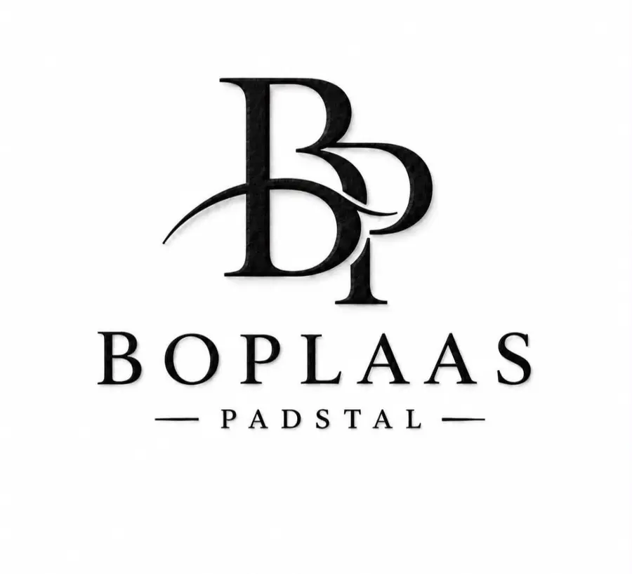
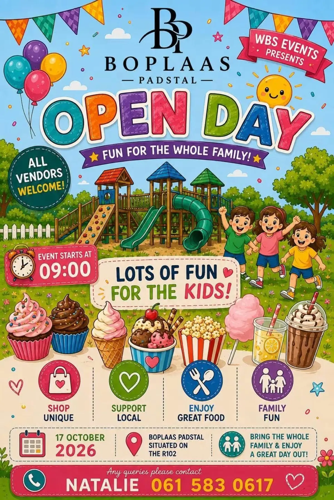

01
Die Slaghuis
The Butchery
Quality meat, cut with care — from everyday favourites to something special for the braai.

WhatsAppPadstal · Slaghuis · Gesinstyd
Good food, quality meat and warm country hospitality on the R102 between Jeffreys Bay and Humansdorp.
A proper padstal
Meer as net ’n vinnige stop.
Boplaas is a relaxed farm stall and butchery where travellers and locals can stock up, sit down and breathe out.
Bring the family, browse local goods, enjoy something tasty and take home quality meat for your next meal or braai.
What you’ll find
The Butchery
Quality meat, cut with care — from everyday favourites to something special for the braai.
Farmstall Food
A proper roadside stop for homemade treats, coffee, pies and fresh local flavour.
Family Time
Room for the children to play while the grown-ups slow down and enjoy the farm atmosphere.
What’s happening
Save the date
A colourful day out for the whole family — with local vendors, great food and plenty of fun for the kids.

Pull in. Slow down.
R102, between Jeffreys Bay and Humansdorp, Eastern Cape
WhatsApp us for today’s opening hours or product availability.
Questions & answers
Need to know